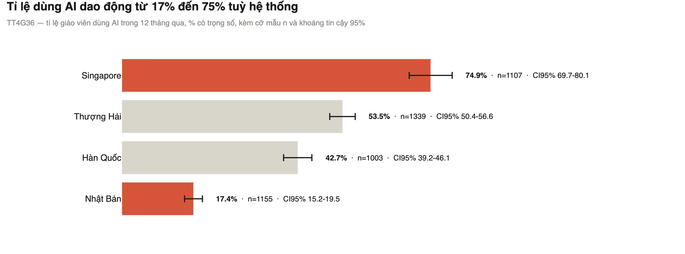
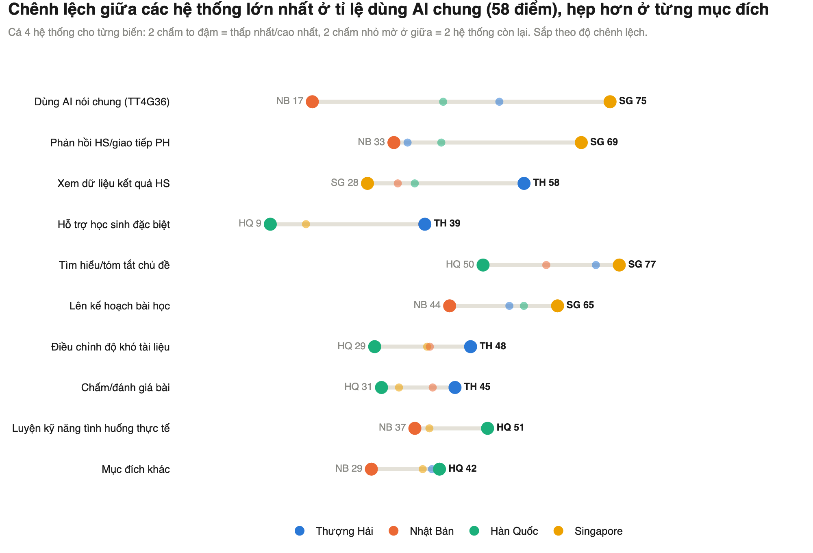
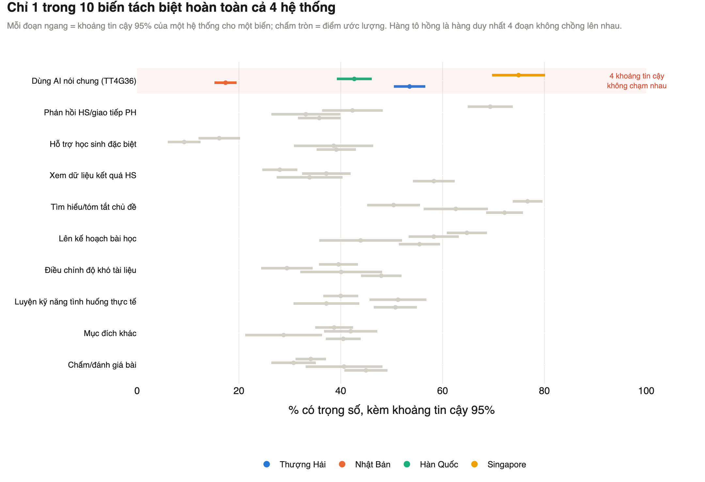
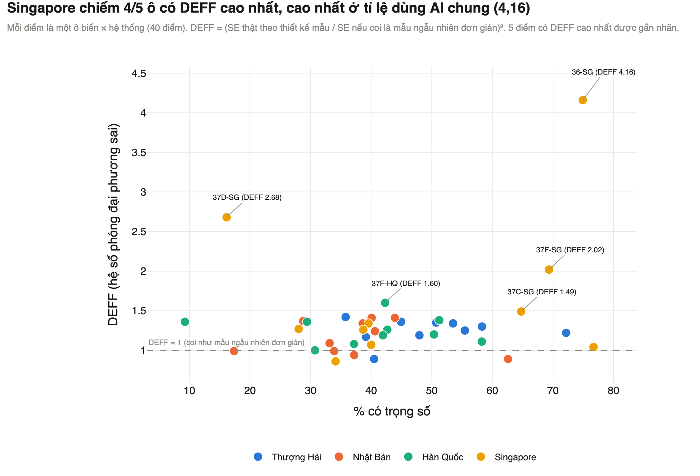
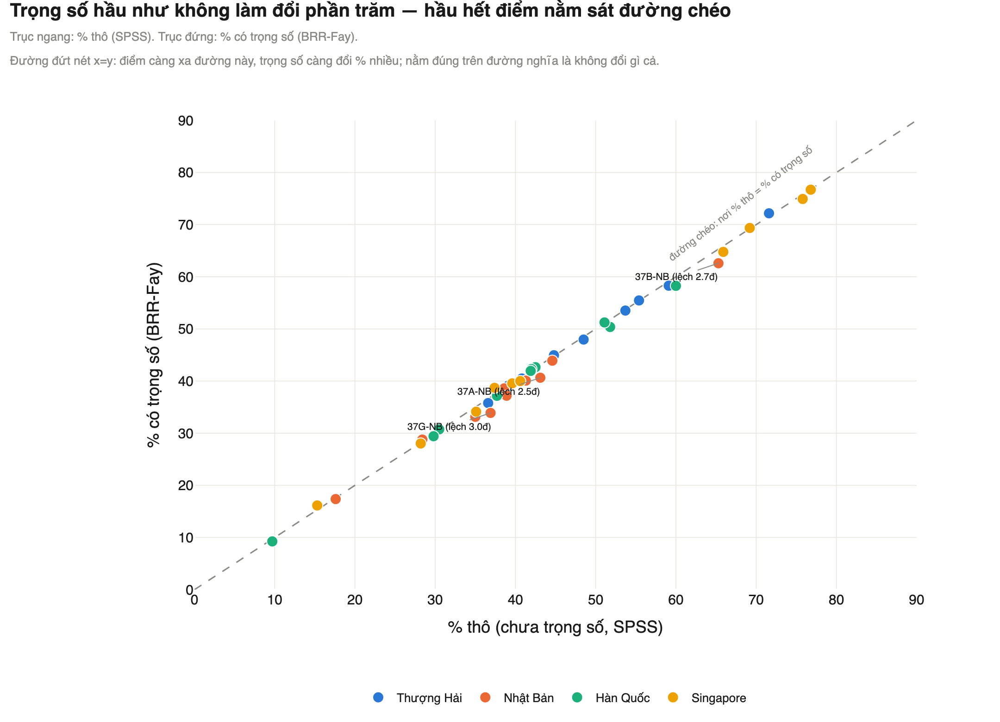
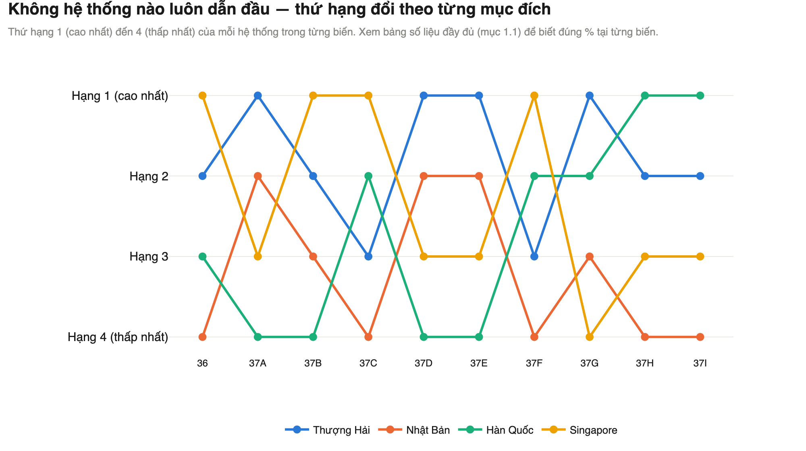
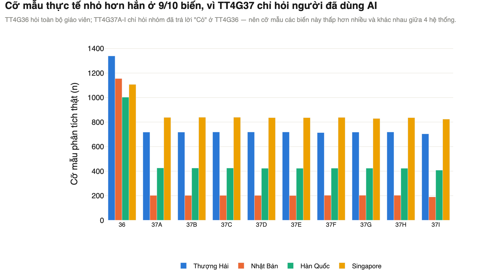
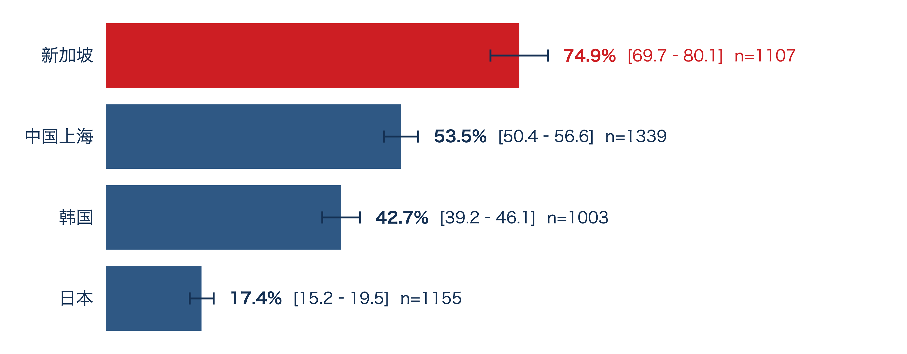
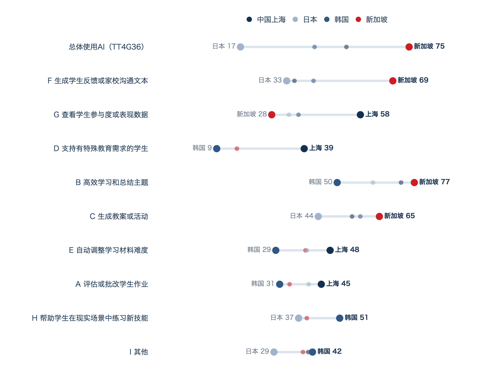
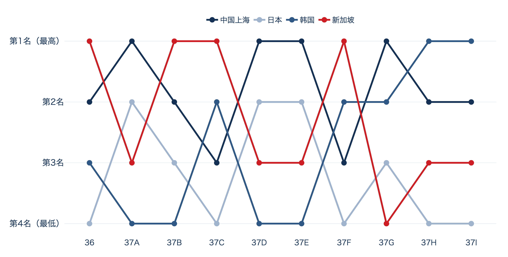

1. Bài nhóm TALIS — 7 biểu đồ chi tiết, số liệu thật từ Câu hỏi 2
Toàn bộ 7 biểu đồ dưới đây tính trực tiếp từ weighted_results_q2.csv (kết quả BRR-Fay đã kiểm chứng ở Module VKL 5-11, kiểm chứng lại lần nữa trong notebook Jupyter ở mục Tải về). Mỗi biểu đồ có một đoạn "Đọc hình" ngay bên dưới, viết đầy đủ, giải thích rõ từng đường, từng ký hiệu xuất hiện trên hình — không giả định người đọc đã biết trước ý nghĩa của chúng.
1.1. Biểu đồ 1 — Tỉ lệ dùng AI (TT4G36), kèm cỡ mẫu và khoảng tin cậy

Đọc hình: mỗi thanh ngang là một hệ thống, chiều dài thanh = % giáo viên trả lời "Có" ở câu hỏi "đã dùng AI trong 12 tháng qua chưa" (biến TT4G36), đã tính có trọng số khảo sát (TCHWGT). Đoạn gạch đen nằm trên mỗi thanh (ký hiệu dạng chữ I nằm ngang, gọi là "thanh sai số" hay "error bar") thể hiện khoảng tin cậy 95% (CI95%) của tỉ lệ đó — nói đơn giản, đây là khoảng giá trị mà ta tin chắc 95% là tỉ lệ thật của toàn bộ giáo viên hệ thống đó rơi vào, dựa trên mẫu đã khảo sát. Bên phải mỗi thanh ghi rõ ba con số: % điểm ước lượng (in đậm), n (cỡ mẫu — số giáo viên thực tế trả lời câu hỏi này ở hệ thống đó), và CI95% (hai đầu khoảng tin cậy). Hai hệ thống cực trị (Singapore cao nhất 74,9%, Nhật Bản thấp nhất 17,4%) được tô màu cam đậm để mắt dồn vào đúng khoảng cách đang muốn nhấn mạnh; Thượng Hải và Hàn Quốc ở giữa được để màu xám nhạt vì không phải trọng tâm của biểu đồ này. Khoảng cách giữa Singapore và Nhật Bản là 74,9 ÷ 17,4 ≈ 4,3 lần — nghĩa là cứ khoảng 10 giáo viên Singapore thì có hơn 7 người đã dùng AI, trong khi ở Nhật Bản chưa đến 2 người trong 10.
1.2. Biểu đồ 2 — So sánh cả 4 hệ thống cho từng mục đích sử dụng AI

Đọc hình: mỗi hàng ngang là một biến (TT4G36 hoặc một mục trong TT4G37A-I). Trên mỗi hàng có 4 chấm tròn, mỗi chấm là một hệ thống, vị trí theo trục ngang là % có trọng số của hệ thống đó cho biến này. Đường kẻ mảnh màu xám nối liền từ chấm thấp nhất đến chấm cao nhất trên mỗi hàng — độ dài đường này chính là độ chênh lệch (khoảng cách) giữa hệ thống cao nhất và thấp nhất cho biến đó. Hai chấm ở hai đầu đường (thấp nhất và cao nhất) được vẽ TO và đậm màu, có ghi mã hệ thống + số % ngay cạnh; hai chấm ở giữa (hai hệ thống còn lại, không phải cực trị) được vẽ NHỎ hơn và làm mờ đi (độ trong suốt cao hơn) vì chúng không phải trọng tâm so sánh của hàng đó, nhưng vẫn hiện diện đầy đủ để không giấu thông tin. Các hàng được sắp xếp từ trên xuống theo thứ tự độ chênh lệch giảm dần — hàng trên cùng (TT4G36) có khoảng cách rộng nhất, hàng dưới cùng có khoảng cách hẹp nhất. Nhìn vào màu chấm ở hai đầu mỗi hàng, ta thấy Singapore (vàng cam) thường xuyên là chấm cao nhất, nhưng không phải luôn luôn — ví dụ ở "Xem dữ liệu kết quả HS", Singapore lại là chấm THẤP nhất còn Thượng Hải mới cao nhất.
1.3. Biểu đồ 3 — Forest plot: biến nào đủ tin cậy để so sánh từng cặp hệ thống

Đọc hình: đây là dạng biểu đồ thống kê gọi là "forest plot" (biểu đồ rừng — tên gọi vì nhiều đoạn thẳng đứng cạnh nhau trông như hàng cây), thường dùng để so sánh nhiều nhóm cùng lúc kèm độ chắc chắn thống kê. Mỗi biến (10 biến, mỗi biến một hàng) có 4 đoạn ngang chồng gần nhau — mỗi đoạn là khoảng tin cậy 95% của một hệ thống, chấm tròn ở giữa đoạn là điểm ước lượng %. Quy tắc đọc quan trọng nhất: NẾU hai đoạn của hai hệ thống không chạm nhau (không có phần nào trùng lên nhau theo trục ngang), ta có thể tự tin khẳng định hai hệ thống đó khác nhau thật sự ở biến đó. NGƯỢC LẠI, nếu hai đoạn chồng lên nhau dù chỉ một chút, ta KHÔNG nên khẳng định chắc chắn là hai hệ thống khác nhau cho riêng cặp đó, dù điểm ước lượng (chấm tròn) có vẻ khác xa nhau trên hình. Hàng trên cùng (TT4G36, tô nền hồng nhạt) là hàng DUY NHẤT trong cả 10 biến mà cả 4 đoạn không hề chạm nhau — nghĩa là có thể khẳng định chắc chắn cả 6 cặp so sánh giữa 4 hệ thống đều khác nhau thật sự. Ở mọi hàng còn lại, luôn có ít nhất một cặp hai đoạn chồng lên nhau, nên khi viết báo cáo, tránh câu khẳng định kiểu "hệ thống A dùng AI vào việc này nhiều hơn hẳn hệ thống B" cho các biến đó, trừ khi đã kiểm tra lại đúng cặp CI của hai hệ thống cụ thể đang so sánh.
1.4. Biểu đồ 4 — Trọng số khảo sát ảnh hưởng tới độ bất định ở đâu nhiều nhất

Đọc hình: mỗi chấm tròn trên hình là MỘT trong 40 tổ hợp "một biến × một hệ thống" (10 biến × 4 hệ thống = 40 điểm). Trục ngang là % có trọng số của tổ hợp đó; trục đứng là DEFF (viết tắt của "design effect" — hệ số phóng đại phương sai do thiết kế mẫu). DEFF được tính bằng công thức: DEFF = (SE tính đúng theo thiết kế mẫu phân tầng/cụm thật ÷ SE nếu coi sai (giả định) mẫu là ngẫu nhiên đơn giản)². Nói đơn giản: DEFF = 1 nghĩa là thiết kế mẫu phức tạp (chọn theo trường học) không làm sai lệch gì so với việc coi như chọn ngẫu nhiên đơn giản toàn bộ giáo viên — đường nét đứt nằm ngang trên hình đánh dấu đúng mức DEFF = 1 này. DEFF càng lớn hơn 1, nghĩa là nếu tính sai số chuẩn (SE) theo kiểu đơn giản (như SPSS mặc định khi chưa khai trọng số/thiết kế mẫu), con số SE đó sẽ bị đánh giá THẤP hơn thực tế rất nhiều, khiến khoảng tin cậy bị vẽ hẹp hơn thật, dễ dẫn tới kết luận "khác biệt có ý nghĩa thống kê" một cách sai lầm. Năm điểm có DEFF cao nhất trong 40 điểm được gắn nhãn trực tiếp trên hình (tên biến-mã hệ thống và giá trị DEFF); bốn trong năm điểm đó là của Singapore (màu vàng cam), đặc biệt điểm TT4G36-Singapore có DEFF lên tới 4,16 — tức SE tính đúng theo thiết kế mẫu cao gấp căn bậc hai của 4,16 (≈2,04 lần) so với SE nếu tính kiểu đơn giản.
1.5. Biểu đồ 5 — Trọng số có làm thay đổi tỉ lệ phần trăm nhiều không

Đọc hình: đây cũng là một biểu đồ phân tán với 40 điểm (10 biến × 4 hệ thống), nhưng so sánh một việc khác với Biểu đồ 4: ở đây so sánh % THÔ (Khánh Linh tự chạy trong SPSS, chưa khai báo trọng số khảo sát) với % CÓ TRỌNG SỐ (tính lại đúng chuẩn TALIS bằng TCHWGT và BRR-Fay). Đường nét đứt chạy chéo góc 45 độ từ góc dưới-trái lên góc trên-phải của hình, có ghi chữ "đường chéo: nơi % thô = % có trọng số" chạy dọc theo đường, là đường THAM CHIẾU x=y — nghĩa là tại bất kỳ điểm nào nằm ĐÚNG TRÊN đường này, giá trị trục ngang (% thô) bằng chính xác giá trị trục đứng (% có trọng số), tức là trọng số không làm thay đổi gì cả cho tổ hợp biến×hệ thống đó. Một điểm càng nằm XA đường chéo này (theo phương thẳng đứng, tức là lệch khỏi đường bao nhiêu phần trăm), thì trọng số càng làm thay đổi ước lượng % của tổ hợp đó nhiều bấy nhiêu. Nhìn vào hình, tuyệt đại đa số 40 điểm đều nằm sát hoặc chồng gần như khít lên đường chéo — nghĩa là với gần hết các tổ hợp, trọng số hầu như không làm đổi con số %. Ba điểm lệch xa đường chéo nhất được gắn nhãn trực tiếp: lệch nhiều nhất là tổ hợp 37G-Nhật Bản (lệch 3,0 điểm phần trăm), tiếp theo là 37A-Nhật Bản (lệch 2,5 điểm) và 37B-Nhật Bản (lệch 2,7 điểm). Tính trên cả 40 điểm, độ lệch tuyệt đối trung bình chỉ khoảng 0,75 điểm phần trăm — một con số rất nhỏ. Ghép thông tin của Biểu đồ 5 này với Biểu đồ 4 ở trên, kết luận chung rất rõ ràng: trọng số khảo sát ảnh hưởng mạnh tới ĐỘ CHẮC CHẮN của kết luận (sai số chuẩn/khoảng tin cậy, xem Biểu đồ 4), nhưng gần như không ảnh hưởng tới bản thân CON SỐ PHẦN TRĂM (xem Biểu đồ 5 này) — đây là lý do vì sao Khánh Linh có thể giữ nguyên các nhận xét mô tả số liệu đã viết trong OUTPUT2.pdf, nhưng cần thay phần kiểm định thống kê (Chi-square/Cramer's V thô) bằng đúng SE/CI có trọng số khi viết báo cáo chính thức.
1.6. Biểu đồ 6 — Không hệ thống nào luôn dẫn đầu

Đọc hình: đây gọi là "bump chart" (biểu đồ xếp hạng theo thời gian/theo danh mục) — thay vì vẽ giá trị % thật trên trục đứng như các biểu đồ trước, trục đứng ở đây là THỨ HẠNG (1 = cao nhất trong 4 hệ thống, 4 = thấp nhất) của mỗi hệ thống tại từng biến (trục ngang, 10 biến từ trái sang phải). Mỗi đường một màu là một hệ thống, đi từ trái sang phải qua cả 10 biến; mỗi khi đường "nhảy" lên hoặc xuống giữa hai biến liền kề, nghĩa là thứ hạng của hệ thống đó đổi vị trí. Nhìn vào hình: không có đường màu nào nằm cố định ở hàng "Hạng 1" từ đầu đến cuối — mọi hệ thống, kể cả Singapore (vàng cam, thường ở hạng 1 nhiều lần nhất), đều có lúc tụt xuống hạng 3 hoặc hạng 4 ở một số biến cụ thể. Điều này có nghĩa: không nên viết kết luận kiểu "Singapore luôn dẫn đầu về sử dụng AI" trong báo cáo, vì đúng là Singapore dẫn đầu ở NHIỀU biến nhưng không phải TẤT CẢ — thứ hạng phụ thuộc vào chính mục đích sử dụng AI cụ thể đang được hỏi. Muốn biết đúng con số % tại một biến cụ thể, xem lại bảng số liệu đầy đủ ở Module VKL 5-11 hoặc notebook Jupyter (mục Tải về).
1.7. Biểu đồ 7 (mới) — Cỡ mẫu phân tích thật khác nhau rất nhiều giữa các biến

Đọc hình: đây là biểu đồ hoàn toàn mới so với các bản trước, bổ sung một chi tiết quan trọng chưa từng được vẽ ra: cỡ mẫu THẬT (n — số giáo viên thực tế có câu trả lời hợp lệ) dùng để tính ra mỗi con số % ở các biểu đồ trên. Cột đầu tiên bên trái (biến TT4G36) có chiều cao lớn hơn hẳn 9 cột nhóm còn lại (TT4G37A đến TT4G37I) — vì TT4G36 ("đã dùng AI chưa") được hỏi cho TOÀN BỘ giáo viên tham gia khảo sát ở cả 4 hệ thống (cỡ mẫu 1000-1340 tuỳ hệ thống), trong khi TT4G37A-I ("mục đích cụ thể khi dùng AI") CHỈ được hỏi tiếp cho nhóm giáo viên đã trả lời "Có" ở TT4G36 — nên cỡ mẫu của 9 biến này thấp hơn nhiều (khoảng 200 đến 840 tuỳ hệ thống) và khác nhau rõ rệt giữa 4 hệ thống, do tỉ lệ dùng AI ở mỗi hệ thống vốn đã khác nhau (xem lại Biểu đồ 1). Đây chính là lý do kỹ thuật (không phải lỗi nhập liệu) khiến khi Khánh Linh lọc dữ liệu trong SPSS, bảng tần số của TT4G37 luôn có N nhỏ hơn hẳn bảng TT4G36 — nên nêu rõ điều này trong phần Phương pháp của báo cáo để hội đồng không nhầm là lỗi lọc dữ liệu.
Khuyến nghị: dùng Biểu đồ 1 hoặc 2 làm slide mở đầu/toàn cảnh, Biểu đồ 3 làm biểu đồ chính cho phần Kết quả (duy nhất thể hiện trực tiếp phát hiện so sánh từng cặp), cặp Biểu đồ 4+5 cho phần Phương pháp/Thảo luận giải thích vì sao cần trọng số, Biểu đồ 7 cho phần Phương pháp giải thích vì sao N khác nhau giữa các bảng, và Biểu đồ 6 là phần mở rộng tuỳ chọn cho phần thảo luận.
1.8. Bộ biểu đồ màu poster nhóm — bản Việt, Anh, Trung
Theo yêu cầu của Khánh Linh (23/11): giữ nguyên dạng Biểu đồ 1, 2, 6 nhưng đổi sang đúng bộ màu của TALIS2024 poster.pptx, và làm thêm bản tiếng Anh, tiếng Trung. Màu không chọn bằng mắt mà đo trực tiếp từ điểm ảnh của file poster: đỏ #CD1E23 (khối "TALIS 2024 EDUCATION", thanh H1-H3, cột Singapore), navy #143053 (băng tiêu đề, chân trang), xanh #2F5884 (các cột còn lại trong biểu đồ TT4G36 của poster). Singapore luôn màu đỏ, giống quy ước poster đang dùng; ba hệ thống còn lại là ba mức xanh đậm-nhạt khác nhau để vẫn phân biệt được khi in đen trắng.
Có hai bản cho mỗi thứ tiếng. Bản poster (Biểu đồ 1, 2, 6) không có tiêu đề vì poster đã có thanh tiêu đề riêng, chữ to hơn để đọc được khi chiếu trên tivi. Bản báo cáo (đủ 7 biểu đồ) có tiêu đề và chú thích, dùng cho tiểu luận cá nhân. Nhãn tiếng Trung dùng đúng cách gọi trong báo cáo 问题二 của nhóm (ví dụ "B 高效学习和总结主题"); nhãn tiếng Anh bám câu hỏi gốc của TALIS ("To efficiently learn about and summarise a topic"). Mỗi mục TT4G37 có thêm chữ cái A-I ở đầu để khớp với bảng trong poster.



| Ngôn ngữ | Bản báo cáo (Biểu đồ 1-7) | Bản poster (Biểu đồ 1, 2, 6) | Chú thích gợi ý |
|---|---|---|---|
| Tiếng Việt | 1 · 2 · 3 · 4 · 5 · 6 · 7 | 1 · 2 · 6 | captions.txt |
| Tiếng Anh | 1 · 2 · 3 · 4 · 5 · 6 · 7 | 1 · 2 · 6 | captions.txt |
| Tiếng Trung | 1 · 2 · 3 · 4 · 5 · 6 · 7 | 1 · 2 · 6 | captions.txt |


Tải một lần cả 30 ảnh + chú thích + script + dữ liệu: TALIS2024_Q2_charts_VI_EN_ZH.zip (~9 MB). Ảnh xuất ở độ phân giải gấp 3 lần, chèn thẳng vào PowerPoint/WPS không bị vỡ khi phóng to.
Đã sửa 3 tiêu đề sai (25/11), áp dụng cho cả ảnh trên trang này, báo cáo tiếng Anh và notebook. (1) Biểu đồ 2 từng ghi "mục đích dùng AI khác biệt nhiều hơn hẳn tỉ lệ chung", nhưng thực tế ngược lại: chênh lệch giữa các hệ thống lớn nhất ở TT4G36 (57,6 điểm), còn 9 mục đích chỉ chênh 13,2-36,2 điểm. (2) Biểu đồ 4 từng ghi DEFF của Singapore cao nhất "đúng ở biến có tỉ lệ cao nhất", nhưng biến có tỉ lệ cao nhất của Singapore là 37B (76,7%), không phải TT4G36 (74,9%). Tiêu đề mới nêu đúng điều dữ liệu cho thấy: Singapore chiếm 4 trong 5 ô có DEFF cao nhất. (3) Biểu đồ 7 từng quy cỡ mẫu nhỏ cho "thiết kế booklet xoay vòng", trong khi nguyên nhân thật là câu hỏi lọc: TT4G37 chỉ hỏi người trả lời "Có" ở TT4G36. Kiểm tra: 1107 × 74,9% ≈ 829 so với n = 838 của Singapore; 1155 × 17,4% ≈ 201 so với n = 202 của Nhật Bản. Script vẽ bộ mới có sẵn các phép kiểm (assert) cho từng khẳng định trong tiêu đề, nên nếu số liệu không khớp thì script dừng chứ không vẽ ra tiêu đề sai.
Lưu ý khi đặt Biểu đồ 6 lên poster: thứ hạng chỉ dựa trên điểm ước lượng. Nhiều chênh lệch ở TT4G37 không có ý nghĩa thống kê; chính báo cáo của nhóm cũng ghi cặp Singapore-Thượng Hải ở mục B có t = 1,91, không đáng kể. Vì vậy nên đặt câu chú thích trong captions.txt ngay dưới hình để người xem không đọc "hạng 1" thành "cao hơn chắc chắn".
2. Bài cá nhân (hành vi học tiếp nối sau hậu biên tập AI) — bảng kế hoạch chọn trước kiểu biểu đồ
Đề tài cá nhân của Khánh Linh ("Hành vi học tập tiếp nối sau hậu biên tập bản dịch Trung-Việt do AI tạo ra") hiện đang ở giai đoạn xây dựng khung lý thuyết và công cụ khảo sát, chưa thu thập số liệu thật. Vì chưa có dữ liệu thật, phần này chỉ còn lại bảng kế hoạch chọn trước kiểu biểu đồ cho từng bước phân tích — không kèm hình vẽ trước với số liệu giả định nữa, để tránh bất kỳ nhầm lẫn nào giữa số liệu minh hoạ và số liệu thật. Khi nào có dữ liệu khảo sát thật, quay lại đúng bảng này để biết chính xác nên vẽ kiểu gì cho từng bước.
| Bước phân tích | Loại biến/kết quả | Kiểu biểu đồ nên dùng | Vì sao |
|---|---|---|---|
| 1. Mô tả hành vi rẽ nhánh (dừng lại / lưu trữ-kiểm chứng tiếp) | Biến phân loại 2-3 nhóm | Cột đơn hoặc cột chồng 100% | Chỉ 2-3 giá trị rời rạc, cột đơn giản đọc nhanh hơn mọi kiểu phức tạp |
| 1. Mô tả thang đo phản tư (Likert nhiều câu) | Thang đo liên tục, N nhỏ (~30) | Dot/strip plot từng sinh viên, KHÔNG dùng raincloud/KDE | N nhỏ: đường mật độ làm mượt dễ vẽ ra hình dạng phân phối không có thật; hiện từng điểm trung thực hơn |
| 2. Cronbach's alpha của thang đo phản tư | Tương quan biến-tổng từng câu | Cột ngang xếp hạng, có mốc tham chiếu ~0,30 | Giúp thấy ngay câu nào "kéo" alpha xuống thấp |
| 3. Độ nhất trí 2 người chấm (phân loại) | Hai cột điểm phân loại | Ma trận nhất trí dạng heatmap | Lộ ngay cặp loại nào hai người chấm hay nhầm lẫn nhất |
| 3. Độ nhất trí 2 người chấm (liên tục/ICC) | Hai cột điểm liên tục | Bland-Altman (trung bình so với chênh lệch, dải ±1,96 SD) | Tách được sai lệch hệ thống (một người luôn chấm cao/thấp hơn) khỏi nhiễu ngẫu nhiên — scatter thường không tách được điều này |
| 4a. Tương quan riêng phần (phản tư ↔ ghi nhớ trì hoãn) | Hai biến liên tục, N~30 | Scatter hiện từng sinh viên + đường hồi quy riêng phần | N nhỏ nên hiện đủ từng điểm, không chỉ một hệ số tương quan |
| 4b. So sánh nhóm (Kruskal-Wallis, phản tư thấp/TB/cao) | Một biến nhóm + một biến kết quả liên tục | Estimation plot: điểm từng SV bên trái, độ lớn hiệu ứng + CI95% bên phải | Vừa thấy từng SV, vừa thấy độ lớn chênh lệch nhóm kèm độ bất định — hơn hẳn 3 hộp box-plot trơ trọi |
Nhắc lại cho mọi hàng trên: nếu dữ liệu thật vẫn có nhiều dòng-nhiệm vụ trên một sinh viên (ví dụ mỗi sinh viên làm 2-3 bài hậu biên tập), gộp về một dòng/sinh viên trước (lấy trung bình), nếu không các điểm trong mọi biểu đồ trên sẽ phóng đại lượng bằng chứng độc lập thực sự có. Cũng không nên dùng SmartPLS/mô hình cấu trúc (SEM) với cỡ mẫu khoảng 30 — không đủ lực thống kê để cho kết quả đáng tin, dù phần mềm vẫn chạy ra số.
3. Tải về
Script Python (Plotly) vẽ cả 7 biểu đồ trên trang này, và notebook Jupyter chạy lại toàn bộ chuỗi input → xử lý → output → biểu đồ cho bài nhóm, đọc thẳng từ file .sav thật:
- make_v3_group_vi.py + weighted_results_q2.csv — script vẽ cả 7 biểu đồ, đặt 2 file cùng thư mục rồi chạy là ra đủ 7 ảnh.
- Chart_Redesign_and_Data_Pipeline.ipynb — notebook đã chạy thật, đọc file TALIS gốc, tự kiểm chứng số liệu, vẽ lại biểu đồ kèm giải thích từng bước (tiếng Anh).
- TALIS2024_Q2_charts_VI_EN_ZH.zip + make_poster_charts.py — bộ biểu đồ màu poster 3 thứ tiếng (mục 1.8) và script tạo ra nó.
- Chart_Selection_Review_EN.docx — báo cáo tiếng Anh đầy đủ cho bài nhóm.
4. Việc cần làm tiếp
- Bài nhóm: lấy Biểu đồ 3 (forest plot) đưa vào phần Kết quả của PPT, Biểu đồ 1/2 cho slide mở đầu.
- Bài nhóm: dùng cặp Biểu đồ 4+5 và Biểu đồ 7 cho phần Phương pháp để giải thích vì sao cần trọng số và vì sao N khác nhau giữa các bảng.
- Bài cá nhân: khi có bộ câu hỏi khảo sát chính thức, đối chiếu lại đúng bảng ở mục 2 trước khi thu thập dữ liệu thật.
- Bài cá nhân: khi có số liệu thật, quay lại đúng bảng mục 2 để chọn kiểu biểu đồ, không cần nghĩ lại từ đầu.